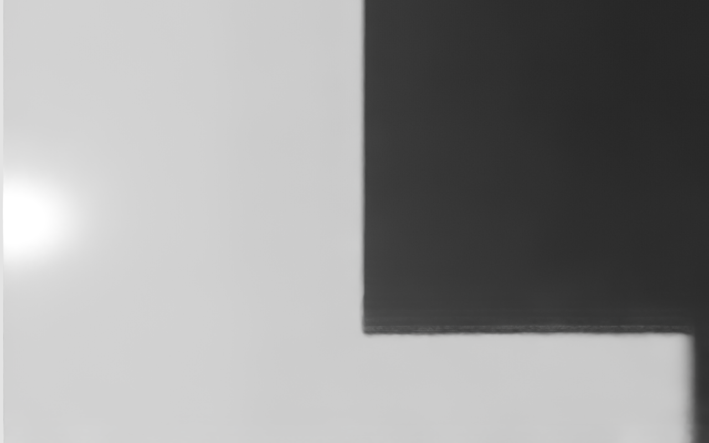
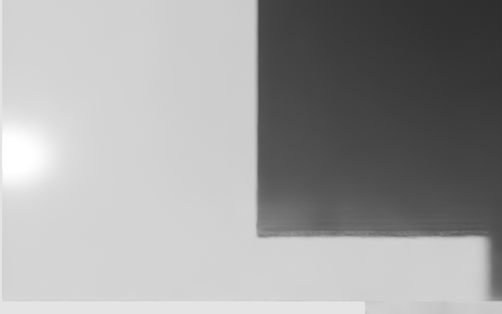
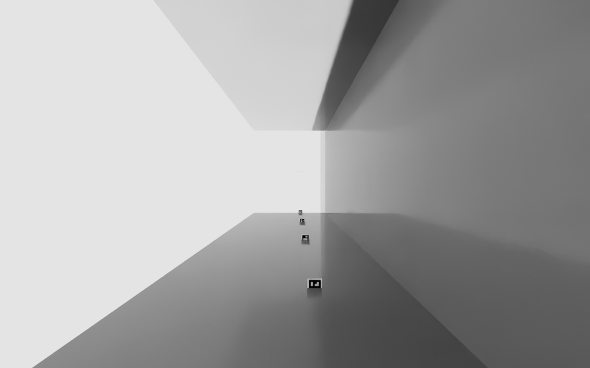
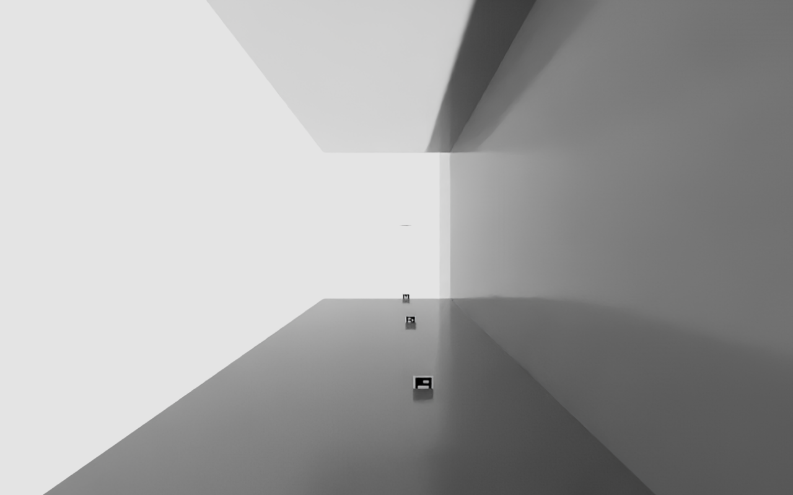
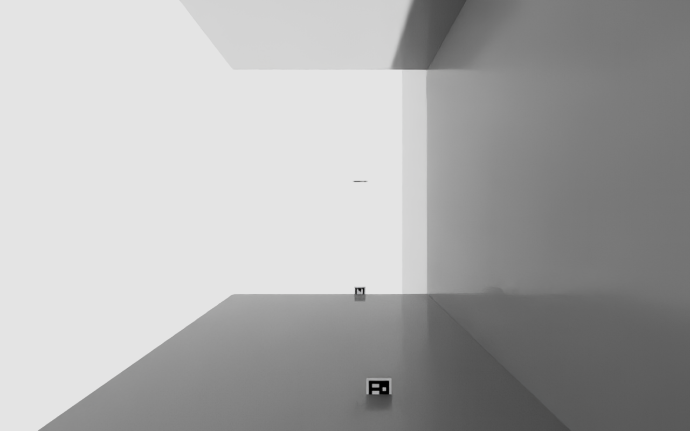
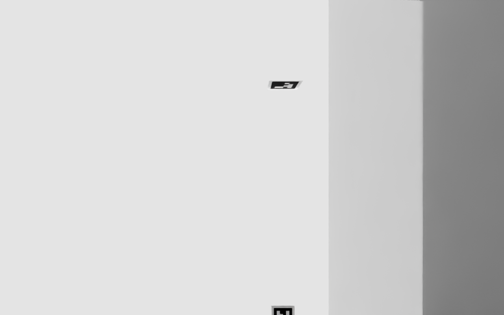

Recorrido cinemático de 11.70 m por el pasillo de
3.00 m, dos cámaras montadas en el chasis, marcas ArUco DICT_4X4_50 en
cabeceras y filas. 42 capturas totales en manifest.json; esta página
muestra una muestra representativa de cada cámara más el diagnóstico
aislado.
Composición casi idéntica en todo el recorrido: un bloque oscuro domina la mitad derecha y un brillo sobreexpuesto queda a la izquierda. No se ve el pasillo abriéndose ni las marcas de cabecera. No está congelada — el diff de píxeles cambia frame a frame — pero el encuadre sugiere que mira muy cerca de un rack en vez de por el centro del pasillo.


Ve la pared del rack de frente. A media distancia aparecen marcas ArUco sobre la pared
— esto explica los "rejected candidates" que reportó el detector: las ve, pero
pequeñas y oblicuas para decodificar. Ojo: midiendo la posición
real del blob de mayor contraste en cam_lateral_x06.98.png, cae al 90% de la
altura del frame; la geometría (cámara a 1.10 m, marca a 0.90 m, ~1.0 m de
distancia) predice ~68%. Esa diferencia de ~20 puntos no cuadra y no la voy a explicar a
ciegas — hay que verlo en vivo, no seguir debatiendo sobre un PNG.




Prueba aislada de una sola marca a 1 m de la cámara, mismos fixes de luz y
apertura que el pasillo completo. Sigue renderizando en blanco uniforme — ni la
marca ni el cubo de control de debug_una_marca.py aparecen. No bloquea el
entregable principal, pero queda como misterio abierto.